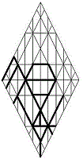

| owcwhy |  |
| Yahushúa: | |
| The Projection/Son of hy |
The gospels speak to the
presence of Yahushua within the man Y’shua,
now called “Jesus.” This Essene Teacher of Righteousness walked,
not in his natural name, but in the spiritual Name given to him by our
Father. He had been reborn in the wilderness: the bitterness (Miriam,
Mary) within his heart had been suffused with the Father’s Presence, and
he became another man.
In Torah, name changes
reflect spiritual change. Like Y’shua, Hoshea
ocwh ben Nun was called to serve, not in his own
name, but in the Name given to him by Father
hy. “Joshua” (Y’shua) was appropriate to Osee’s
calling; for this son of Ephraim was to apprentice in the tent of Moshe,
so that he could lead Y’SharAL beyond Yordan.
The true and faithful
witness, Y’shua cautioned us that he could do nothing on his own: that
it’s enough for the servant to be as his Lord. Even so, speaking
through Y’shua, Yahushua confessed that there were things only the
Father knew: for the universe could not contain HaShem
hwhy;
and he therefore gave his Word—his Shout—to serve as the interface
between the Creator and the realms of Creation.
Gematria
397
zxc:
The contentious struggle
c for transformation
x will accomplish its purpose
z;
for the petitions
s of sorrowful hearts
d will be answered
m by the outpour of merciful
w blessings at the hand
y
of the Father
a.
| Mashiyach | ||
|
site |
Stepping Stones |
book |